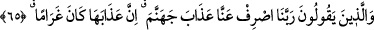
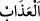
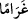
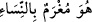
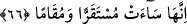

Allah bizi ve sizi kendi zâtına yöneltsin.
65. Ve şöyle derler: “Rabbimiz! Cehennem azâbını üzerimizden sav. Doğrusu
onun azâbı gelip geçici değil, devamlıdır.”
“Ve” onlar namazlarının peşinden veya her vakit “şöyle derler: “Rabbimiz!
Cehennem azâbını üzerimizden sav.” geri çevir, uzaklaştır. “Doğrusu onun azâbı gelip
geçici değil, devamlıdır.” Devamlı bir kötülük ve kendisiyle azâba dûçar edilen
kâfirlerden hiç ayrılıp gitmeyen sürekli bir helâktir.
“
” şiddetli acı vermektir.
Râğıb der ki: “
” kelimesi “
”, yâni o alacaklının borçluya yapışıp
ondan ayrılmadığı gibi kadınlara tutkun ve bağlıdır, anlamındaki sözden alınmıştır.
Muhammed b. Ka‘b der ki: “Allah, verdiği nimetlerin bedelini kâfirlerden ister.
Onlar bunu ödeyemeyince, onları borçlandırır ve cehenneme atar.”
66. Orası cidden ne kötü bir yerleşme ve ikâmet yeridir!
Bu cümle, onların yukarıda kendilerinden cehennem azâbının uzaklaştırılması
hakkında ettikleri duânın sebebini, cehennem azâbının hâlinin kötü olmasına bağladıktan
sonra bizzat kendisinin durumunun kötü olmasına bağlamaktadır. Bu âyet, onların önceki
âyetteki sözlerinin devamıdır.
Âyetin mânâsı şöyledir: O, yâni cehennem karar kılma ve ikâmet yeri olarak ne
kötüdür! Gerçekten cehennem kötü bir dinlenme yeridir ve bulunulacak kötü bir yerdir.
Âyet bildirmektedir ki Rahmân’ın kulları halkla iyi geçindikleri ve Hakk’a kullukta
gayret gösterdikleri halde azâbdan korkarlar ve onun kendilerinden uzaklaştırılması için
Allah’a yalvarırlar. Yâni onlar bütün çaba ve gayretlerini ortaya koyarlar, sonra duâ
ederken âsîlerin menziline inerler, özür beyan edenlerin durduğu yerde dururlar, boyun
bükerek zelil bir lisân ile Cenab-ı Hakk’a yalvarırlar. Nitekim şâir şöyle demiştir:
Kendimi hakir bir kul/köle yerine koymadan
O’nun huzûruna girmek istemedim
Bu,
onların
amellerine
önem
vermemelerinden
ve
hallerinin
devamına
güvenmemelerinden dolayıdır. Nitekim Allah Teâlâ şöyle buyurur: “Ve Rablerine
dönecekleri için yapmakta oldukları işleri kalpleri çarparak yapanlar” (el-